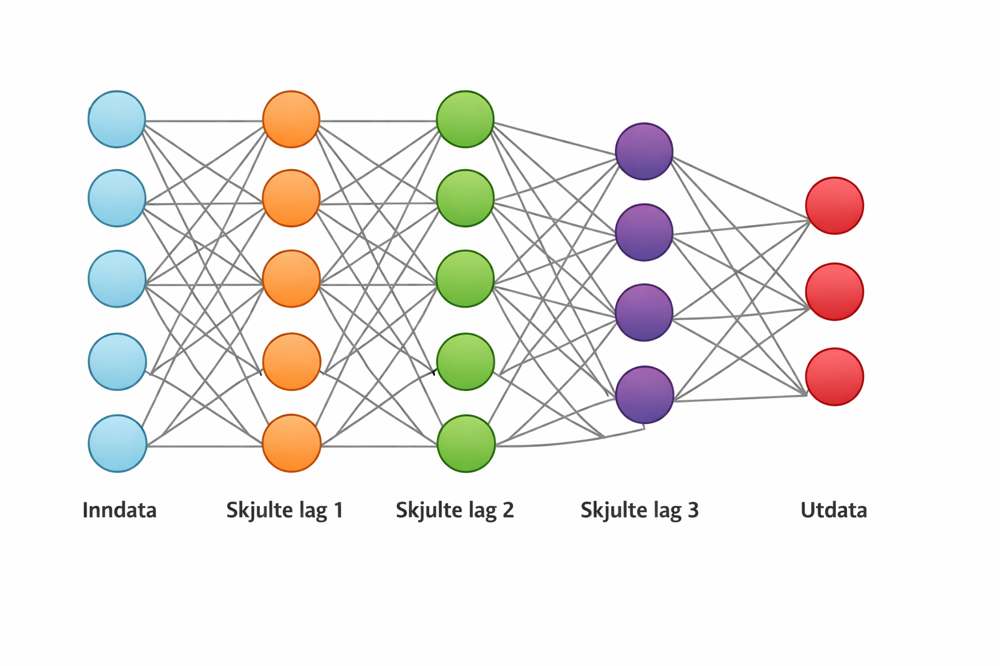
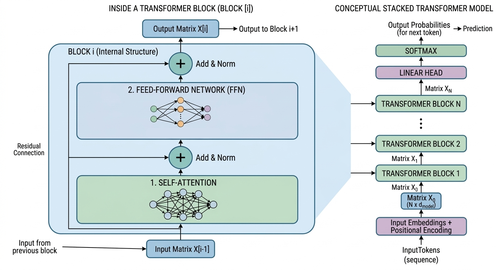

Introduksjon
Dette heftet gir en praktisk og strukturert innføring i hvordan moderne AI-modellerer bygget opp og fungerer. Målet er ikke å dekke alle detaljer eller gi en fullstendig teoretisk behandling, men å gi en korrekt og konkret forståelse av de viktigste byggesteinene og mekanismene.
Fremstillingen viser først den grunnleggende strukturen til et tradisjonelt nevralt nettverk: noder organisert i lag, koblet sammen gjennom vektede forbindelser. Vi ser der hvordan input-data representeres som vektorer, hvordan disse propagere gjennom nettverket via såkalt forward flow, og hvordan resultatet til slutt fremkommer i output-laget. Deretter ser vi nærmere på moderne AI-arkitekturer, blokk- eller transformer-strukturer med attention, residual connections og mere til.
Det gis også en overordnet beskrivelse av hvordan nettverk trenes ved hjelp av feiltilbakeføring (backpropagation), der gradienter brukes til å justere vektene.
Heftet ser også på representasjon av tekst gjennom tokens og embedding-vektorer, og til slutt hvordan en chatbot bygger opp sine mer sammensatte svar. Tekstlig input og tekstligemodeller har hovedfokus, men vi ser også litt på bildegenerering og hvordan disse modellene skiller seg fra de tekstbaserte.
Avslutningsvis vises kodeeksempler i Python som demonstrerer hvordan et mindre AI-modeller kan implementeres og kjøres. Eksemplene er bevisst holdt enkle, men dekker likevel de fleste sentrale komponentene i et nettverk. Hensikten er å gjøre det mulig å se direkte sammenhenger mellom matematisk beskrivelse og faktisk programkode.
Heftet er ment som en bro mellom teori og praksis: en introduksjon som er enkel nok til å være tilgjengelig, men samtidig presis nok til å gi en realistisk forståelse av virkemåten til moderne AI-systemer.
Historisk bakgrunn
Utviklingen av kunstig intelligens og nevrale nettverk har skjedd over flere tiår, med perioder både av stor optimisme og stagnasjon. Dagens modeller, som ligger til grunn for moderne chatbots, bygger på en rekke viktige ideer og gjennombrudd.
De første konseptene for nevrale nettverk oppstod allerede på 1940- og 1950-tallet, med enkle matematiske modeller av nevroner. På 1950-tallet ble perceptronet introdusert som en av de første lærende modellene. Denne kunne klassifisere enkle mønstre, men hadde klare begrensninger, blant annet manglende evne til å lære mer komplekse sammenhenger.
På 1980-tallet kom et viktig gjennombrudd med gjenoppdagelsen og populariseringen av algoritmen for feiltilbakeføring (backpropagation). Dette gjorde det mulig å trene flerlags nevrale nettverk mer effektivt, og la grunnlaget for det som senere ble kjent som deep learning.
Gjennom 1990- og 2000-tallet ble nevrale nettverk videreutviklet, blant annet gjennom spesialiserte arkitekturer for bilder og sekvensdata. Samtidig økte tilgjengeligheten av data og regnekraft, noe som var avgjørende for praktisk anvendelse.
Et nytt og avgjørende skritt kom på 2010-tallet, med utviklingen av dype nevrale nettverk som kunne trenes på store datasett. Innen språkbehandling ble først rekurrente nevrale nettverk (RNN) og senere mer avanserte varianter brukt for å håndtere sekvenser av tekst.
Et sentralt gjennombrudd kom med introduksjonen av oppmerksomhetsmekanismer (attention), som gjorde det mulig for modeller å vekte ulike deler av input-data forskjellig. Dette kulminerte i publikasjonen Attention Is All You Need fra Google i 2017. Her ble transformer-arkitekturen introdusert, der hele modellens funksjon i stor grad baserer seg på attention-mekanismer, uten behov for rekurrente strukturer.
Transformere har siden blitt grunnlaget for mange moderne språkmodeller. Ved å kombinere store datasett, høy modellkapasitet og effektive treningsmetoder har disse modellene gjort det mulig å utvikle avanserte systemer for tekstgenerering og dialog—det vi i dag kjenner som chatbots.
Denne utviklingen viser hvordan dagens AI-systemer ikke er resultatet av én enkelt idé, men av en gradvis oppbygning av konsepter, algoritmer og teknologiske fremskritt over tid.
Tradisjonell AI-arkitektur: Nodenettverk
Et tradisjonelt nodenettverk, eller et nevralt nettverk, består av noder organisert i lag, der hvert lag er koblet til det neste gjennom vektede forbindelser, også kalt synapser. Figuren nedenfor viser et forenklet nettverk, med et input-lag, tre såkalte skjulte lag og et output-lag. Man sier at dette er et nodenettverk med 4 nivåer (eller har dybde 4).

I figuren er hver sirkel en node, og linjene mellom nodene representerer synapsene. Til hver synapse assosieres det en vekt, en numerisk verdi (positiv eller negativ), hvilket gir opphav til såkalte vektmatriser for hvert lag. Mer presist, når \(n\) noder fra laget over forbindes med \(m\) noder i laget under, får man \(m \cdot n\) synapser, hvilket gir opphav til en \(m \times n\)-matrise med vekter. Denne vektmatrisen på nivå \(i\) betegnes
Når nodenettverket kjører (såkalt forward flow), mates en input-vektor (tenk spørsmål) inn i input-nodene og transformeres suksessivt gjennom alle lagene til et resultat (output-vektor) havner i output-nodene (tenk svaret på spørsmålet). I hvert lag utføres matriseoperasjoner mellom vektene og input-vektoren, hvilket resulterer i en ny vektor som så sendes videre til neste lag for tilsvarende sett av beregninger.
Vi skal straks se på flere detaljer, men bør nevne at det gjerne finnes flere elementer i grunnstrukturen enn det viste. F.eks. knyttes gjerne såkalte bias-vektorer \(\mathbf{b^{(i)}}\) til hvert lag som blandes inn i beregningene.
Når man trener nettverket starter prosessen i motsatt ende (backward flow). Vi skal si mer om dette senere, men kan kort si at det først beregnes en matematisk avstand mellom output-vektor og en vektor som representerer riktig svar, en såkalt tapsfunksjon. Verdien gis som startverdi til backdrop-algoritmen, som er en gradient-basert minimeringsalgoritme som her anvendes på vektrommet (den totale variasjonen av alle vektmatriser, bias-vektorer og andre numeriske parametre). Ved nok slik trening vil alle vektene og øvrige verdier å få gunstige verdier, i den forstand at de er optimalisert for å minimere tapsfunksjonen. I praksis betyr det at modellen gjerne svarer "Paris" på spørsmål om "hovedstad i Frankrike", og den svarer "bygg" på spørsmål om "kornslag benyttet i malt-whisky" osv. Dette er en forenkling, men kan være et greit bilde å ha i starten. Modeller av denne typen er ikke egnet som chatbots. De har likevel nok kompleksitet til å løse flere karakteriseringsoppgaver. Skiftgjenkjennelse er et eksempel på noe relativt små modeller av denne type kan håndtere. Chatbots baserer seg på en annen arkitektur og flere ting må også skje både før, under og etter en kjøring.
Når det gjelder input, som kan omtales likt for både tradisjonelle og moderne modeller, så holder det foreløpig å si at bruker-input via numeriske tokens ender opp som en følge av input-vektorer:
Disse vektorene er relativt lange. Dimensjonene varier med anvendelsen, men kan være flere tusen elementer lange. De sendes en etter en gjennom nettverket, og resultatet blir en følge av output-vektorer \(\mathbf{y^{(1)}, y^{(2)}, y^{(3)},} \: ...\)
La oss nå se på den sentrale kjøringen (forward flow) av et tradisjonelt nodenett. Selv om vi snart skal fokusere på moderne AI-modeller, kan dette likevel være nyttig ved at man kan forstå elementene i en kjøring uten å måtte fordype seg i for mange detaljer. Den viser bl.a. hvordan nodenettverk kan representeres av et antall matriser og kjøres ved ulike matriseoperasjoner.
En input-vektor \(\mathbf{x}^{(1)}\) prosesseres på følgende måte i denne modellen:
Bias-vektorene våre, som virker på hvert sitt lag, må ha en lengde (dimensjon) som er lik antall noder i laget under seg for at dette skal passe.
Output av input \(\mathbf{x_1}\) kan vi betegne \(\mathbf{y_1}\), og er altså lik vektoren \(\mathbf{z_k}\) vist over. Når denne er beregnet, sendes neste input-vektor \(\mathbf{x_2}\) inn i samme prosess, og vi ender til slutt opp med en følge \(\mathbf{y^{(1)}, y^{(2)}, y^{(3)} ...}\) av output-vektorer.
Lag-operasjonene er i bunn og lineære matriseoperasjoner, men med et tilleggsbidrag av en ikke-lineær avbildningen kalt \(\sigma\), som vi anvendte i lag-operasjonene over. Det er flere slike ikke-lineære avbildninger i praktiske bruk. Her er noen:
-
\(\text{GELU}: \sigma(x) = x \cdot Φ(x)\)
-
\(\text{ReLU}: \sigma(x) = max(0,x)\)
-
\(\text{SiLU}: \sigma(x) = \frac{x}{1 + e^{-x}}\)
-
\(\text{Sigmoid}: \sigma(x) = \frac{1}{1+ e^{-x}}\)
-
\(\sigma(x) = \text{tanh}(x)\)
(der \(\phi(x)\) er kumulativ normalfordeling). \(\text{GELU}\) er vanligst å bruke i moderne språkmodeller.
Uansett hvilken man velger, er ikke-linearitet helt avgjørende for at et nodenettverk, tradisjonelle såvel som moderne, skal fungere. Uten dette blir alt forutsigbart og dødt. Men det ønskes nokså subtile endringer her, noe som ikke ødelegger vektingen, som kan beregnes effektivt og som samspiller godt med treningsmetodene (backdrop). Det kan nevnes at det forskes på andre operasjoner enn rene matriseoperasjoner her (andre effektive operasjoner som også gjør store tall store og små tall små, som ikke dreper signalene). Polynomer er bl.a. forsøkt.
Dette var forward flow uten attention-matriser. Som antydet i historikk-kapittelet (artikkelen All You Need Is Attention), bidrar attention-matriser betydelig til kvaliteten av moderne modeller. Men for å forstå hva det er, må vi se nærmere på blokk-baserte AI-modeller og inkludere flere operasjoner.
Moderne AI-arkitektur: Blokk-strukturer
Moderne arkitekturer har en annen oppbygging enn det nevnte. Man kan godt oppfatte dem som en sammensetning av flere nodenettverk, men det er bedre å tenke på strukturen som bestående av et antall blokker. Hver blokk består av to lag, et attention-lag (også kalt self-attention-lag) og ett feed forward lag (betegnet FFN- eller MLP-lag). Blokkene, som i antall kan være rundt 100 i moderne arkitekturer, er på input-parametre nær like, og er koblet sammen i en sekvens, der output fra én blokk mates inn i neste blokk til man til slutt ender opp med en output-matrise \(\mathbf{Y}\) (i figuren betegnet \(\mathbf{X_n}\) = output fra siste blokk).

Et attention-lag i en transformer-blokk representeres av et sett av tre vektmatriser \(\mathbf{W^Q}\), \(\mathbf{W^K}\) og \(\mathbf{W^V}\). FFN-laget representeres av en vektmatrise \(\mathbf{W^{(i)}}\), samt en bias-matrise og ulike normaliseringsparametre.
Merk at moderne litteratur begrepet lag (“layer”) annerledes i enn tradisjonelle lag i nodenettverk. Med dybden av en slik blokkarkitektur mener man antall blokker. Og vanlig dybde for større AI-modeller kan altså være rundt 100.
Chatbots er egentlig designet for å finne nest ord fra en sekvens av ord. De er ikke designet for bare å gi ett svar på ett kort spørsmål, som vi har illustrert situasjonen med til nå. ChatBots besvarer egentlig: "Hva er neste token gitt hele teksten så langt?” Og “hele teksten” inkluderer: brukerens spørsmål alt modellen selv har generert. Vi skal se på alle detaljer rundt dette og alle konkrete beregninger snart.
1. Prompt-tokenisering og strukturering
Vår beskrivelse til nå av hva som skjer når vi spør er en Chatbot (ett-ords spørmål, ett-ords svar), har vært forenklet. Forward flow er uansett den viktigste delen, men flere ting skjer både før og etter selve kjøringen. La oss ta det i rekkefølge.
Teksten brukeren skriver inn blir aller først pre-prosessert/vasket. Unødvendige tekst kan bli fjernet, som eventuelle HTML-tags, rare linjeskift og annet, og teksten kan bli ryddet noe opp i. Visse kontroll-tokens og format-annotasjoner vil også bli lagt til av systemet. Start av teksten, separasjon av setninger og markups som tydelig skiller referanse til bruker og assistent, er eksempel på slike annotasjoner.
Etter dette vil neste steg være tilordning av tokens.
2. Tokens og embedding-vektorer
Tekst representeres av embedding-vektorer via tokens. En token er en numerisk representasjon av et ord, en del av et ord eller et tegn, avhengig av hvordan modellen er trent. Spørsmålstegn og andre symboler er altså egne tokens, og sammensatte ord deles typisk opp i flere for lettere å reflektere semantikken. Ukjente ord vil bli delt opp, om nødvendig til enkelttegn. Et token fungerer som en indeks eller referanse til en embedding-vektor i en lært/trent modell, en såkalt embedding matrix:
Embedding-vektorenes verdier blir tilpasset i treningen slik at de fanger opp relasjoner mellom ord og begreper. Ord som er semantisk like, vil (pga. treningen) bli representert av vektorer som ligger nær hverandre i vektorrommet. Avstand eller likhet mellom slike vektorer kan måles på ulike måter. Et vanlig mål er cosinus-likhet, som beregnes ut fra vinkelen mellom vektorene. Vektorer som peker i lignende retninger vil ha høy cosinus-likhet, og representerer dermed ord med lignende betydning. (Vektorer som peker i liknende retning, vil ha cosinus-verdi nær 1; vektorer som peker i motsatt retning, vil ha verdier nær -1; vektorer som står tilnærmet vinkelrett på hverandre, vil ha cosinus-verdi nær 0.) Hvor i setninger ord forekommer og rekkefølgen av ord har også betydning i denne treningen.
Hver rad i embedding-matrisen tilsvarer ett token i vokabularet. Når et token med indeks \(i\) brukes som input, hentes den tilsvarende raden i matrisen ut og brukes som input-vektor.
Embedding-matrise
Token → Vektor (dimensjon d=4)
"hund" → [0.2, -0.1, 0.7, 0.3]
"katt" → [0.1, 0.0, 0.6, 0.4]
"bil" → [0.9, -0.5, 0.1, 0.2]
...
Samlet som matrise:
┌─────────────────────┐
hund │ 0.2 -0.1 0.7 0.3 │
katt │ 0.1 0.0 0.6 0.4 │
bil │ 0.9 -0.5 0.1 0.2 │
... │ . . . . │
└─────────────────────┘Dimensjoner og implementasjonsdetaljer i nyere chatbots er ofte hemmelig, men for ChatGPT 3 er disse detaljene kjente. ChatGPT 3 er egentlig en familie av modeller: I den største av disse er lengden av embeddingsvektorer 12 288. Antall token er 50 257. Dvs. at \(\mathbf{W^{embed}}\) er en \(50 \: 257 \times 12 \: 288\)-matrise.
Input-vektorene \(\mathbf{x^{(i)}}\), som kommer følgens av tokens, settes sammen til én input-matrise \(\mathbf{X}\). Det vil altså si at rader for aktuelle tokens i embeddingsmatrisen, blir radene i \(\mathbf{X}\).
Input-matrise X:
┌─────────────────────┐
x1 │ 0.2 -0.1 0.7 0.3 │
x2 │ 0.1 0.0 0.6 0.4 │
x3 │ 0.9 -0.5 0.1 0.2 │
... │ . . . . │
└─────────────────────┘Antall rader i \(\mathbf{X}\) vil være antall tokens i spørsmålet. Så om vektorlengdene er \(12 \: 288\) og antall input-tokens er \(10\), vil \(\mathbf{X}\) (og output-matrise \(\mathbf{Y}\) ) være en \(10 \times 12 \: 288\)-matrise.
(I virkeligheten er det mer effektivt å velge en rad-antall som bedre reflekter mer effektive datastørrelser som 128, 512 etc, slik at \(\mathbf{X}\) gjerne paddes med 0’ere).
Moderne arkitektur opererer med matriser gjennom hele forward flow, ikke enkeltvektorer som i tradisjonelle nodenettverk, og modellen produserer i hvert run en output-matrise \(\mathbf{Y}\).
3. Moderne forward flow: Transformer blocks
En ChatBot forsøker altså finne beste, neste token (fra de som er angitt og funnet til nå). Den gjør det, som vi skal se, ved å legge embeddingsvektoren tilhørende dette token’et til forrige input-matrise \(\mathbf{X}\) og dermed produsere en ny input-matrise \(\mathbf{X'}\) med radvektorer for alle tidligere tokens samt den nye radvektoren.
La oss se nærmere på hva som skjer i en transformer-blokk. Vi tar utgangspunkt i en input-matrise \(\mathbf{X}\) og følger dens transformasjon gjennom blokken.
Det er 6 hovedtrinn i prosessen, hvorav steg 1-4 utgjør det som kalles attention, og som skjer i attention-laget. Dette er altså det som har vist seg så viktig for moderne AI-modeller. Trinn 5 og 6 skjer i FNN-laget, hvilket inkluderer såkalt residual connections. Vi skal først vise beregningene før vi diskuterer betydninger og implikasjoner av beregningene.
1. Attention-lag: Opprettelse av projeksjonene Q, K og V
Input-matrise \(\mathbf{X}\) er en \(n×d\)-matrise, la oss si. Her er \(d\) den dimensjonerende størrelsen. Dette er lengden av vektorene (radvektorene) vi opererer med i modellen (opptil \(12 \: 288\) i ChatGPT 3).
Det første som skjer er at input-matrisen \(\mathbf{X}\) multipliseres med tre ulike kvadratiske vektmatriser \(\mathbf{W^Q}\), \(\mathbf{W^K}\) og \(\mathbf{W^V}\) av dimensjoner \(d×d\). Dette gir oss tre nye \(n×d\)-matriser, ulike projeksjoner av input-matrisen, som kalles hhv:
-
\(\mathbf{Q=X⋅W^Q}\) (Queries)
-
\(\mathbf{K=X⋅W^K}\) (Keys)
-
\(\mathbf{V=X⋅W^V}\) (Values)
Merk at det disse navnen indikerer språklige roller, som kanskje eller kanskje ikke oppnås for matrisene. Det bør understrekes at disse ikke trenes forskjellig. Eventuelle grammatiske egenskaper er i tilfelle bare en indirekte følge av deres matematiske plassering i formlene og konskvensene dette for i treningen.
Glem heller ikke at disse matrisene er tre projeksjoner av input-matrisen.
2. Attention-lag: Relasjoner
Idéen bak attention har å gjøre med at man i sterkere grad enn i tidligere modeller, forsøker å skue tilbake til tidligere ord i spørsmålet og til nye produserte tokens, når man bestemmer neste token i følgen. Når en input-matrise multipliseres med vektmatriser, så flytter og strekker dette radvektorene fra matrisen i det store vektorrommet, hvilket er vel og bra. Resultatet påvirkes av statiske, godt trenede vekter (såkalte harde vekter), men påvirkes ikke tidligere tokens/input-vektorer, selv om jo \(\mathbf{X}\) inneholder dette (slik vi føyer embeddingsvektorer til nye tokens til input-matrisene i forkant av hver kjøring). For å få til attention, må vi på en eller annen måte la \(\mathbf{X}\) påvirke seg selv, altså at vi erstatter \(\mathbf{X}\) med en «\(\mathbf{X}\) påvirket av \(\mathbf{X}\)»-matrise. Her kommer \(\mathbf{Q}\), \(\mathbf{K}\) og \(\mathbf{V}\) inn, som alle er direkte projeksjoner av \(\mathbf{X}\) (tenk versjoner av \(\mathbf{X}\)). Vi bør på en eller annen måte erstatte \(\mathbf{X}\) med en matrise \(\mathbf{Z}\) som er satt samme av disse. Dette skjer i steg 2, 3 og 4.
Først gjør man
der man deler på en skaleringsfaktor \(\sqrt{d_k})\) for stabilitet. Dette gir en \(n×n\) matrise med såkalte scores-verdier.
Merk at om bruker-spørsmålet bestod av \(10\) tokens, så blir resultatet en \(10×10\)-matrise (om vi ser bort fra eventuell padding). Dette må derfor ha noe med vår 10 input-tokens å gjøre. Her ser vi et eksempel på resultatmatrisen på dette stadiet i beregningen. Eller mer presist ville dette nøyaktig vært det vi hadde fått om vi multiplisert \(\mathbf{X}\) og \(\mathbf{X^T}\) direkte. Nå er radvektorene først endret av harde vektmatriser, dvs. de er flyttet lineært rundt i vektrommet og representerer ikke konkrete noe tokens med sine nåværende verdier (i prinsippet kunne de til og med ha representert andre tokens, selv om dette er ekstremt lite sannsynlig). Det virker likevel rimelig å si at dette er sammenhengen mellom token’ene etter radvektorenes ulike "reiser" i vektrommet bestemt av \(\mathbf{W^Q}\) og \(\mathbf{W^K}\).
Negative verdier er fullt mulig her, men er utelatt av hensyn til pen, enkel formatering.
Score-matrise S = QKᵀ / √d
jeg så en hund som løp i parken fordi den
┌────────────────────────────────────────────────────────────────────────┐
jeg │ 1.2 2.1 0.3 1.0 0.5 0.8 0.9 1.1 0.7 0.6 │
så │ 0.5 1.3 1.1 2.5 1.2 1.8 0.4 1.0 0.9 0.3 │
en │ 0.4 0.6 1.2 3.5 1.0 0.5 0.3 0.4 0.8 0.2 │
hund │ 0.6 1.1 1.0 2.2 1.6 1.2 0.5 0.6 1.0 0.9 │
som │ 0.5 1.0 0.7 2.0 1.1 2.1 0.4 0.5 0.9 0.8 │
løp │ 0.4 0.9 0.6 2.8 1.2 2.3 0.3 0.5 0.8 0.4 │
i │ 1.0 1.2 0.5 1.1 0.6 1.0 1.1 2.0 0.9 1.0 │
parken │ 0.6 1.0 0.5 1.2 0.6 1.1 1.0 2.1 1.5 0.9 │
fordi │ 0.5 0.6 0.5 2.1 1.0 1.1 0.4 1.0 1.2 2.0 │
den │ 0.4 0.5 0.5 3.2 1.1 1.6 0.3 0.4 0.9 1.0 │
└────────────────────────────────────────────────────────────────────────┘Tallene sier noe om hvor mye token som "hund" og "parken" påvirker hverandre. Noen tall er negative, noen positive, noen store, noen små. Men verdiene lar seg ikke tolke direkte foreløpig.
3. Softmax (Sannsynlighetsvekter)
Vi kjører deretter disse skårene radvis gjennom en \(\text{Softmax}\)-funksjon. Dette tvinger tallene til å bli mellom 0 og 1, og summen av hver rad blir 1.0 (altså en sannsynlighetfordeling i hver rad).
Minner om at \(\text{Softmax}\) av en vektor \(\mathbf{v} = [v_1, v_2, \ldots, v_n\)] beregnes slik:
Her ser vi et eksempel på matrisen i dette steget i beregningen:
Attention-matrise A (10 × 10):
jeg så en hund som løp i parken fordi den
┌────────────────────────────────────────────────────────────────────────┐
jeg │ 0.10 0.20 0.05 0.10 0.05 0.10 0.10 0.10 0.10 0.10 │
så │ 0.05 0.10 0.10 0.20 0.10 0.15 0.05 0.10 0.10 0.05 │
en │ 0.05 0.05 0.10 0.40 0.10 0.05 0.05 0.05 0.10 0.05 │
hund │ 0.05 0.10 0.10 0.20 0.15 0.10 0.05 0.05 0.10 0.10 │
som │ 0.05 0.10 0.05 0.20 0.10 0.20 0.05 0.05 0.10 0.10 │
løp │ 0.05 0.10 0.05 0.25 0.10 0.20 0.05 0.05 0.10 0.05 │
i │ 0.10 0.10 0.05 0.10 0.05 0.10 0.10 0.20 0.10 0.10 │
parken │ 0.05 0.10 0.05 0.10 0.05 0.10 0.10 0.20 0.15 0.10 │
fordi │ 0.05 0.05 0.05 0.20 0.10 0.10 0.05 0.10 0.10 0.20 │
den │ 0.05 0.05 0.05 0.35 0.10 0.15 0.05 0.05 0.10 0.10 │
└────────────────────────────────────────────────────────────────────────┘Merk at vi med de radvise \(\text{softmax}\)-operasjonene også har tvunget fram en forskjell mellom rader og kolonner i denne kvadratiske matrisen. Verdien i f.eks. posisjon (2, 5) betyr noe annet enn verdien i posisjon (5, 2). Mange sier litt for lettvint (etter min mening) at det første betyr at sannsynligheten der måler hvor relevant token 5 er for token 2 (og motsatt for det andre). Igjen kan det hende at dette blir en følge gjennom trening, men det er ikke gitt fra matematikken at det blir slik. Vi har imidlertid tvunget fram en usymmetri som treningen kan gi en betydning.
4. Vektet sum (Kontekstualisering)
Vi bruker så attention-matrisen som vekter (de kalles soft weights, siden de ikke er statiske (harde), men dynamisk bestemt) på \(\mathbf{V}\)-matrisen:
Og med dette er attention-mekanismen i denne blokken ferdig, og matrisen \(\mathbf{Z}\) er klar for å sendes videre til FFN-laget i blokken. Men la oss først se nærmer på hva vi egentlig har produsert her. \(\mathbf{Z}\) blir en \(10 \times d\)-matrise, f.eks. en \(10 \times 12 \: 208\)-matrise. Første radvektor i \(\mathbf{Z}\) blir f.eks.
Koeffisientene \(a_{i,j}\) her er nettopp sannsynlighetsverdiene (radene) i attention-matrisen vi har eksemplifisert. Radvektoren vi ser her representerer altså en vektor i det store vektorrommet med koeffisienter med slike koeffisienter. Jeg føler det er grunn til å være forsiktige med for konkrete språknære tolkninger av denne. Det som imidlertid ER sikkert, er at vi har utført en tydelig attention-operasjon (transformerte \(\mathbf{X}\)-verdier er unyttet som soft weights i bestemmelsen av \(\mathbf{Z}\)). Verdiene er sterkt avhengig av hvilke tokens som er benyttet til nå. Håpet er altså at nye tokens som produseres med dette er bedre knyttet til setningene som kommer før det, og dermed gjør modellen bedre egnet.
5. Residual Add & Layer Norm (Stabilitet)
Det første vi gjør er å utføre den første av to resudial connections. For FFN-laget i første blokk legger man den opprinnelige \(\mathbf{X}\) til resultatet \(\mathbf{Z}\). I etterfølgende blokker er det output-vektoren fra forrige blokk som benyttes som input-blokk her. Deretter normaliserer tallene slik at de har et gjennomsnitt på 0 og et standardavvik på 1.
RESTEN AV DOKUMENTET ER BARE KLADD OG BESTÅR AV LØSREVNE UTSAGN SOM IKKE ER GJENNOMGÅTT
Funksjonen \(\text{LayerNorm}\) (Layer Normalization) er en kritisk komponent for å holde matematikken stabil. Uten denne ville tallene i matrisen enten vokst seg gigantiske eller krympet til null etter 12 blokker, noe som gjør det umulig for modellen å lære. For en vektor \(\mathbf{x}\) med dimensjon \(d\), beregnes LayerNorm slik:
-
Finner gjennomsnittet (\(\mu\)):
-
Finner variansen (\(\sigma^2\)):
Man legger ofte til et bittelite tall (\(\epsilon\), f.eks. \(10^{-5}\)) for å unngå divisjon med null.
-
Normaliser vektoren:
-
Skalerer og forskyver vektoren:
For at modellen skal kunne "angre" normaliseringen hvis den trenger det, lærer den to egne parametere for hvert lag: \(\gamma\) og \(\beta\).
6. Feed-Forward Network (Prosessering)
Til slutt går hver rad i \(\mathbf{X_{mid}}\) gjennom et lite nodenettverk helt uavhengig av de andre radene. Dette består vanligvis av to lineære lag med en aktiveringsfunksjon (som \(\text{ReLU}\) eller \(\text{GeLU}\)) i mellom.
Disse beregningene gjentas gjennom hver blokk, som er like i struktur, men som har sine egne parametre, egne vektmatriser osv. Ouptut fra hvert lag føres inn som input til neste lag til vi får ut output-matrisen \(\mathbf{Y}\) fra siste blokk.
Diskusjon og implikasjoner
Stegene 1-4 er det som kalles attention.
(1) Transformasjonen til Q, K og V (Fleksibiliteten)
I tradisjonell AI er en vektor mer statisk. I attention-delen bruker man \(\mathbf{W_Q}\), \(\mathbf{W_K}\) og \(\mathbf{W_V}\) til å la ordet presentere seg på tre forskjellige måter samtidig:
-
Query: "Dette leter jeg etter i andre ord."
-
Key: "Dette er merkelappen min som andre kan lete etter."
-
Value: "Dette er informasjonen jeg faktisk bærer på."
Dette er viktig fordi det lar modellen lære forskjellige typer relasjoner. Én attention-blokk kan lære å se etter subjektet i en setning, mens en annen lærer å se etter adjektiver.
(2) Skalarproduktet Q⋅KT (Sammenligningen)
Dette er det mest kritiske punktet. Ved å gange Query-matrisen med den transponerte Key-matrisen, tvinger vi modellen til å sammenligne alle ord med alle ord.
-
Hvis en Query og en Key "peker i samme retning" (er matematisk like), blir tallet høyt.
-
Dette skaper en dynamisk vektmatrise som endrer seg for hver eneste setning. Dette er "magien" – vektene er ikke faste, de oppstår i sanntid basert på konteksten.
(3) Softmax-operasjonen (Fokuseringen)
Uten Softmax ville attention-matrisen bare vært en tabell med tilfeldige tall. Softmax tvinger modellen til å prioritere. Den må velge hvilke ord som er viktigst.
-
Hvis et ord får 0.9 i vekt, betyr det at modellen "fokuserer" nesten alt sitt intellekt på akkurat det ordet i det øyeblikket.
(4) Blandingen: Weights⋅V (Kontekstualiseringen)
Dette er selve "produktet" av attention. Vi bruker vektene vi fant til å lage en ny representasjon av hvert ord.
-
Inngang: Ordet "bank".
-Attention-prosess: Oppdager ordet "penger" i nærheten.
-
Utgang: En ny vektor for "bank" som er "farget" av vektoren for "penger".
Hvorfor kaller vi det "Attention"?
Det kalles attention (oppmerksomhet) fordi modellen bokstavelig talt lærer å flytte oppmerksomheten sin.
Mens Attention handler om kommunikasjon, handler Residual Connections og Feed-Forward om stabilitet og kunnskapslagring.
(5) og (6) Residual Connection (Motorveien)
En Residual Connection (også kalt Skip Connection) er den pilen som går utenom en modul og legger sammen inngangen med utgangen: Xut=LayerNorm(Xinn+Modul(Xinn)). Hva det bidrar med i prosessen:
-
Bevaring av identitet: Det sørger for at den opprinnelige informasjonen (hvilke ord som faktisk sto i setningen) ikke blir vasket bort av de kompliserte matematiske operasjonene i Attention-delen.
-
Inkrementelle endringer: I stedet for at hver blokk må finne opp hjulet på nytt, trenger den bare å finne ut: "Hva er den lille tingen jeg skal legge til den eksisterende forståelsen?"
Implikasjoner for trening:
-
Løser "Gradient-problemet": Under trening sender vi feilsignaler (gradienter) bakover i nettverket. I dype nettverk uten residualer blir disse signalene ofte borte (de dør ut). Residual-forbindelsene fungerer som en superleder som lar feilsignalet flyte nesten uhindret helt tilbake til de første lagene.
-
Raskere konvergens: Modellen lærer mye fortere fordi den starter med en fungerende "identitets-funksjon" (den bare sender input videre) og gradvis lærer seg å legge til nyttig kompleksitet.
(6) Feed-Forward Network (Kontorarbeidet)
Etter at ordene har utvekslet informasjon i Attention-steget, går hver vektor individuelt gjennom et Feed-Forward-lag \((\mathbf{X⋅W1→ReLU→X⋅W2})\). Hva det bidrar med i prosessen:
-
Ikke-linearitet: Attention er i bunn og grunn bare vektet summering (lineært). Feed-Forward-laget bruker aktiveringsfunksjoner (som \(\text{ReLU}\)) som lar modellen forstå komplekse, ikke-lineære mønstre.
-
Individuell fordypning: Her får hvert ord "sitte i fred" og bearbeide den informasjonen det nettopp fikk fra de andre ordene. Det er her ordet oppdaterer sin egen interne status.
Implikasjoner for trening:
-
Modellens "Hukommelse": Forskere mener nå at det er i Feed-Forward-lagene at modellens faktiske kunnskap lagres (f.eks. "Paris er hovedstaden i Frankrike").
-
Nøkkel-verdi-minne: Under trening lærer \(\mathbf{W_1}\) å kjenne igjen spesifikke mønstre (nøkler), og \(\mathbf{W_2}\) lærer å spytte ut den tilhørende informasjonen (verdien). Mens Attention finner ut hvilke ord som er relevante, bruker Feed-Forward denne relevansen til å hente ut lagret kunnskap fra vektene sine.
4. Etter forward flow: Sampling og dekoding
Vi vet at chatbots ikke bare leverer ett svar, men svarer mer sammensatt med hele setninger, avsnitt osv. Denne fasen er omfattende, tidkrevende og skjer i flere trinn. Output-vektorene som kommer ut av forward flow, er på langt nær det endelige svaret.
Overordnet kan vi si at en chatbot genererer tekst sekvensielt. Modellen produserer output, og det avledes en sannsynlighetsfordeling over mulige neste tokens fra dette. Et nytt token velges fra fordelingen og en tilhørende vektor føyes tl inputen, som deretter mates inn i modellen på nytt. Prosessen gjentas, slik at teksten bygges opp token for token.
Vi skal stegvis da detaljene her. La oss starte med vokabular-matrisen. I moderne modeller er dette den samme store, trent matrisen (embeddings-matrisen) vi har snakket om før. Denne inneholder alle tokens i vokabularet og tilhørende input-vektorer. Denne matrisen betegnes i denne fasen som
Output-matrisen som kommer ut av alle blokkene, \(\mathbf{Y}\) (som i moderne modeller har samme form som [\mathbf{X}]), multipliseres med \(\mathbf{W_{vocab}}\). Nærmere bestemt gjør man:
der \(\mathbf{b_{vocab}}\) er en trent output bias-matrise. Man utfører så \(\mathbf{softmax}\) på hver rad i resultat-matrisen \(\mathbf{Y_{vocab}}\), og ender opp med en matrise \(\mathbf{P}\) der hver rad \(\mathbf{P_1, P_2, ...}\) gir en sannsynlighetsfordeling for hvert token i vokabularet, gitt den input som er prosessert gjennom nettverket. (Kolonnene i matrisen \(\mathbf{P}\) representerer på sin side sannsynligheten for hvert token i vokabularet.)
Systemet tar så siste rad, \(\mathbf{P_k}\), velger ut et sannsynlig token fra dette, henter inne en tilhørende input-vektor og sender denne sammen med de opprinnelige input-vektorene (altså en ny matrise \(\mathbf{X'}\)) gjennom en ny forward flow. Denne prosessen gjentas til et spesielt End of Sentence-token er valgt (eller til en forhåndsbestemt grense for antall tokens er nådd).
La oss eksemplifisere.
Anta bruker skriver: "Hovedstaden i Frankrike? Vi tenker oss at dette utløser følgende beregningstrinnn:
-
Input: ["Hovedstaden", "i", "Frankrike", "?"]
-
Input-matrise \(\mathbf{X \qquad \qquad \; ( x^{(1)}, x^{(2)}, x^{(3)}, x^{(4} )} \)
-
Output-matrise \(\mathbf{ Y \qquad \qquad \: (y^{(1)}, y^{(2)}, y^{(3)}, y^{(4)} ) }\).
-
Sannsynlighetsmatrise \(\mathbf{P \qquad ( P^{(1)}, P^{(2)}, P^{(3)}, P^{(4)})}\).
Systemet velger så et token med høy sannsynlighet i \(\mathbf{P^{(4)}}\), la oss si et som representerer "Paris". Dette føyes til på slutten av input-sekvensen, slik at man får:
-
Ny input: ["Hovedstaden", "i", "Frankrike", "?", "Paris"]
-
Ny input-matrise \(\mathbf{X' \qquad \qquad \;( x^{(1)}, x^{(2)}, x^{(3)}, x^{(4}, x^{(5} )} \)
-
Ny output-matrise \(\mathbf{Y' \qquad \qquad \: ( y^{'(1)}, y^{'(2)}, y^{'(3)}, y^{'(4)}, y^{'(5)})}\).
-
Ny sannsynlighetsmatrise \(\mathbf{P' \qquad ( P^{'(1)}, P^{'(2)}, P^{'(3)}, P^{'(4)}, P^{'(5)})}\).
og sender denne gjennom en ny forward flow sammen med de opprinnelige input-vektorene. Dette gjentas til et End of Sequence-token (EOS) produseres, bestemte stopp-sekvenser fremkommer eller en maksimumsgrense nås. Modellene lager gjerne en naturlig slutt, men dette er bare en statistisk sannsynlighet, ikke en garanti. Den følger sannsynlighetene den har lært også for når en tekst vanligvis avsluttes.
Programmeringseksempel
Mye av dette er relativt enkelt å programmere f.eks. i Python, og vi skal forsøke å lage nedskalert modell som utfører det meste av dette. Vi må da bestemme oss for en del dimensjoner i modellen.
Forutsetninger
Vi legger da til grunn input-vektorer av dimensjon 128 og en følge av to i tallet: stem:[\mathbf{x^{(0)}, x^{(1)}}]. Videre legger vi til grunn fire nivåer i nodenettverket og følgende antall noder i hvert lag: 128→64→32→32→10
Initialisering
Vi kan nå definere strukturen for selve nodenettverket:
import numpy as np
# NODENETTVERK
# INPUT-VEKTORER
x = [
np.zeros((128, 1)),
np.zeros((128, 1)),
]
# VEKTMATRISER
W = [np.zeros((64, 128)),
np.zeros((32, 64)),
np.zeros((32, 32)),
np.zeros((10, 32))
]
# BIAS-VEKTORER
b = [np.zeros((128, 1)),
np.zeros((64, 1)),
np.zeros((32, 1)),
np.zeros((10, 1))
]Input